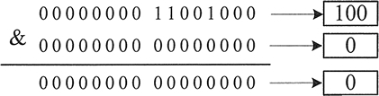
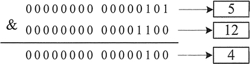
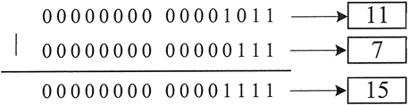
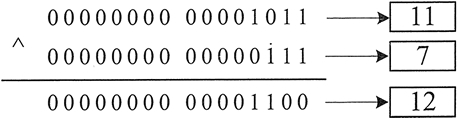
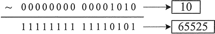
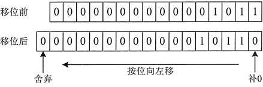
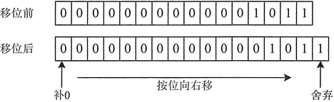

首页 > Java教程 > Java程序设计基础
Java位运算符：Java移位运算符、复合位赋值运算符及位逻辑运算符
Java 定义的位运算（bitwise operators）直接对整数类型的位进行操作，这些整数类型包括 long，int，short，char 和 byte。
位运算符主要用来对操作数二进制的位进行运算。按位运算表示按每个二进制位（bit）进行计算，其操作数和运算结果都是整型值。
Java 语言中的位运算符分为位逻辑运算符和位移运算符两类，下面详细介绍每类包含的运算符。
例如下面的表达式：
图 1 所示为这个运算过程，结果为 0。
下面是两个非零的数字进行位与运算的过程。
这两行语句执行后变量 Z 的值是 4，图 2 所示为这个运算过程。
下面是一个使用位或运算符的表达式。
运算结果为 15，图 3 所示为其运算过程。
下面是一个使用位异或运算符的表达式。
运算结果为 12，图 4 所示为其运算过程。
提示：在有的高级语言中，将运算符
下面是一个使用位取反运算符的表达式。
运算结果为 65525，图 5 所示为其运算过程。
我们可以使用如下的程序来检查这个运算结果。
编译执行以上程序，会发现输出的结果是 -11，而不是 65525。这是因为取反之后的结果是十六进制数，而在上面的程序中使用 %d 将输出转换为了十进制数。
可以使用如下语句查看十六进制结果。
可以看到输出结果为 fff5，将它转换为二进制是 1111111111110101。这个二进制数的最高位为 1，表示这个数为负数。除最高位外，按位取反再加 1，即得到二进制原码 1000000000001011，用十进制数表示即为 -11。
注意：位运算符的操作数只能是整型或者字符型数据以及它们的变体，不用于 float、double 或者 long 等复杂的数据类型。
例如，将整数 11 向左位移 1 位的过程如图 6 所示。
从图 6 中可以看到，原来数的所有二进制位都向左移动 1 位。原来位于左边的最高位 0 被移出舍弃，再向尾部追加 0 补位。最终到的结果是 22，相当于原来数的 2 倍。
例如，将整数 11 向右位移 1 位的过程如图 7 所示。
从图 7 中可以看到，原来数的所有二进制位都向右移动 1 位。原来位于右边的最低位 1 被移出舍弃，再向最高位追加 0 补位。最终到的结果是 5，相当于原数整除 2 的结果。
下面的程序定义了几个 int 型变量，然后运用位赋值简写的形式将运算后的值赋给相应的变量：
位运算符主要用来对操作数二进制的位进行运算。按位运算表示按每个二进制位（bit）进行计算，其操作数和运算结果都是整型值。
Java 语言中的位运算符分为位逻辑运算符和位移运算符两类，下面详细介绍每类包含的运算符。
位逻辑运算符
位逻辑运算符包含 4 个：&（与）、|（或）、~（非）和 ^（异或）。除了 ~（即位取反）为单目运算符外，其余都为双目运算符。表 1 中列出了它们的基本用法。| 运算符 | 含义 | 实例 | 结果 |
|---|---|---|---|
| & | 按位进行与运算（AND） | 4 & 5 | 4 |
| | | 按位进行或运算（OR） | 4 | 5 | 5 |
| ^ | 按位进行异或运算（XOR） | 4 ^ 5 | 1 |
| ~ | 按位进行取反运算（NOT） | ~ 4 | -5 |
位与运算符
位与运算符为 &，其运算规则是：参与运算的数字，低位对齐，高位不足的补零，如果对应的二进制位同时为 1，那么计算结果才为 1，否则为 0。因此，任何数与 0 进行按位与运算，其结果都为 0。例如下面的表达式：
100&0
图 1 所示为这个运算过程，结果为 0。

图 1 100位与0的运算过程
图 1 100位与0的运算过程
下面是两个非零的数字进行位与运算的过程。
int x = 5,y = 12; // 创建整型变量保存两个数 int z = x&y; // 对这两个数进行位与运算，结果保存到z
这两行语句执行后变量 Z 的值是 4，图 2 所示为这个运算过程。

图 2 5位与12的运算过程
图 2 5位与12的运算过程
位或运算符
位或运算符为 |，其运算规则是：参与运算的数字，低位对齐，高位不足的补零。如果对应的二进制位只要有一个为 1，那么结果就为 1；如果对应的二进制位都为 0，结果才为 0。下面是一个使用位或运算符的表达式。
11|7
运算结果为 15，图 3 所示为其运算过程。

图 3 11位或7的运算过程
图 3 11位或7的运算过程
位异或运算符
位异或运算符为^，其运算规则是：参与运算的数字，低位对齐，高位不足的补零，如果对应的二进制位相同（同时为 0 或同时为 1）时，结果为 0；如果对应的二进制位不相同，结果则为 1。下面是一个使用位异或运算符的表达式。
11^7
运算结果为 12，图 4 所示为其运算过程。

图 4 11位异或7的运算过程
图 4 11位异或7的运算过程
提示：在有的高级语言中，将运算符
^作为求幂运算符，要注意区分。
位取反运算符
位取反运算符为~，其运算规则是：只对一个操作数进行运算，将操作数二进制中的 1 改为 0，0 改为 1。下面是一个使用位取反运算符的表达式。
~10
运算结果为 65525，图 5 所示为其运算过程。

图 5 对10位取反的运算过程
图 5 对10位取反的运算过程
我们可以使用如下的程序来检查这个运算结果。
int i = 10;
System.out.printf("%d \n",~i);
编译执行以上程序，会发现输出的结果是 -11，而不是 65525。这是因为取反之后的结果是十六进制数，而在上面的程序中使用 %d 将输出转换为了十进制数。
可以使用如下语句查看十六进制结果。
int i=10;
System.out.printf("%x \n",~i);
可以看到输出结果为 fff5，将它转换为二进制是 1111111111110101。这个二进制数的最高位为 1，表示这个数为负数。除最高位外，按位取反再加 1，即得到二进制原码 1000000000001011，用十进制数表示即为 -11。
注意：位运算符的操作数只能是整型或者字符型数据以及它们的变体，不用于 float、double 或者 long 等复杂的数据类型。
位移运算符
位移运算符用来将操作数向某个方向（向左或者右）移动指定的二进制位数。表 2 列出了 Java 语言中的两个位移运算符，它们都属于双目运算符。| 运算符 | 含义 | 实例 | 结果 |
|---|---|---|---|
| » | 右移位运算符 | 8»1 | 4 |
| « | 左移位运算符 | 9«2 | 36 |
左位移运算符
左移位运算符为 «，其运算规则是：按二进制形式把所有的数字向左移动对应的位数，高位移出（舍弃），低位的空位补零。例如，将整数 11 向左位移 1 位的过程如图 6 所示。

图 6 对11左移1位运算过程
图 6 对11左移1位运算过程
从图 6 中可以看到，原来数的所有二进制位都向左移动 1 位。原来位于左边的最高位 0 被移出舍弃，再向尾部追加 0 补位。最终到的结果是 22，相当于原来数的 2 倍。
右位移运算符
右位移运算符为 »，其运算规则是：按二进制形式把所有的数字向右移动对应的位数，低位移出（舍弃），高位的空位补零。例如，将整数 11 向右位移 1 位的过程如图 7 所示。

图 7 对11右移1位运算过程
图 7 对11右移1位运算过程
从图 7 中可以看到，原来数的所有二进制位都向右移动 1 位。原来位于右边的最低位 1 被移出舍弃，再向最高位追加 0 补位。最终到的结果是 5，相当于原数整除 2 的结果。
复合位赋值运算符
所有的二进制位运算符都有一种将赋值与位运算组合在一起的简写形式。复合位赋值运算符由赋值运算符与位逻辑运算符和位移运算符组合而成。表 3 列出了组合后的复合位赋值运算符。| 运算符 | 含义 | 实例 | 结果 |
|---|---|---|---|
| &= | 按位与赋值 | num1 &= num2 | 等价于 num 1=num 1 & num2 |
| |= | 按位或赋值 | num1 |= num2 | 等价于 num 1=num 1 | num2 |
| ^= | 按位异或赋值 | num1 ^= num2 | 等价于 num 1=num 1 ^ num2 |
| -= | 按位取反赋值 | num1 -= num2 | 等价于 num 1=num 1 - num2 |
| «= | 按位左移赋值 | num1 «= num2 | 等价于 num 1=num 1 « num2 |
| »= | 按位右移赋值 | num1 »= num2 | 等价于 num 1=num 1 » num2 |
下面的程序定义了几个 int 型变量，然后运用位赋值简写的形式将运算后的值赋给相应的变量：
int a = 1;
int b = 2;
int c = 3;
a &= 4;
a |= 4;
a ^= c;
a -= 6;
b >>= 1;
c <<= 1;
System.out.println("a = " + a);
System.out.println("b = " + b);
System.out.println("c = " + c);
该程序的输出为：
a = 1
b = 1
c = 6
关注公众号「站长严长生」，在手机上阅读所有教程，随时随地都能学习。内含一款搜索神器，免费下载全网书籍和视频。

微信扫码关注公众号